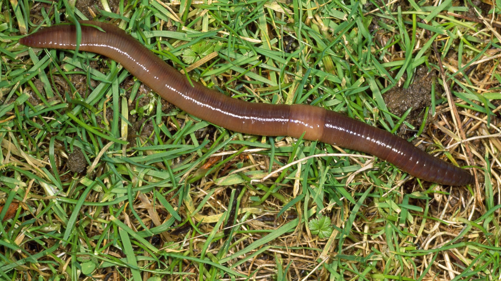

Körperbau
Segmente
Der Körper des Regenwurms besteht aus zahlreichen Gliedern, den Segmenten. Die Borsten, von denen Regenwürmer pro Segment vier Paare besitzen, können mit Hilfe besonderer Muskeln bewegt werden. Die Anzahl der |  |
Hautmuskelschlauch
Nach außen hin ist der gesamte Körper des Wurms und damit auch jedes seiner Segmente durch einen Hautmuskelschlauch abgegrenzt. Am äußersten ist Haut. Hier schließt die Ringmuskelschicht an. An diese schließt wiederum nach innen die dicke Längsmuskelschicht an.
Verdauungsorgane
Eine Art Oberlippe überwölbt am Kopfende den Mund. Die Mundöffnung führt in den Darm, der den Regenwurm von vorn bis hinten vollständig durchzieht. Der Darm beginnt mit dem muskulösen Rachen, auf den die Speiseröhre sowie ein muskulöser Kropf und Muskelmagen folgen. Hier wird die pflanzliche Nahrung durch mitaufgenommene kleine Steinchen gleichmäßig zerrieben. Es folgt der lange Mitteldarm. Am Hinterende des Wurms befindet sich der After. Mit Hilfe ihrer Abscheidungen neutralisieren die Würmer alle aufgenommenen säurehaltigen Bodeninhaltsstoffe und sorgen so auf natürliche Weise für eine Bodenverbesserung.
Regeneration
Regenerationsvermögen
Regenwürmer verfügen über ein beachtliches Regenerationsvermögen. So ist es den Tieren möglich, nach der Durchtrennung ihr Hinterende fast vollständig wieder auszubilden, wobei das Regenerationsvermögen zur Körpermitte hin abnimmt. Am Vorderende können je nach Art maximal die ersten vier bis acht Segmente abgetrennt werden. Diese Segmente werden wieder ersetzt. Trennt man vorn mehr Segmente ab, werden nicht mehr alle regeneriert. Bei mehr als 15 entfernten Segmenten ist meist keine Regeneration des Vorderendes mehr möglich. Das Regenerat hebt sich durch seine hellere Färbung von der benachbarten Körperpartie deutlich ab. Das weit verbreitete Gerücht, dass zwei lebende Würmer entstünden, wenn man einen Wurm in der Mitte durchtrennt, trifft nicht zu. Das Vorderende kann nur überleben, wenn die Teilung des Regenwurms hinter dem 40. Segment erfolgt. Davor befinden sich lebenswichtige Organe wie die Herzen, die für die Aufrechterhaltung des Blutkreislaufs erforderlich sind und bei Verlust zum Tode führen.